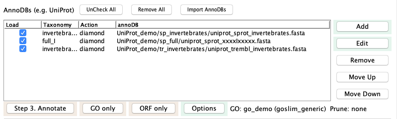
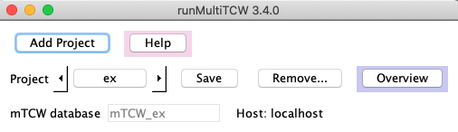
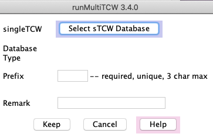
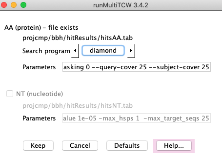
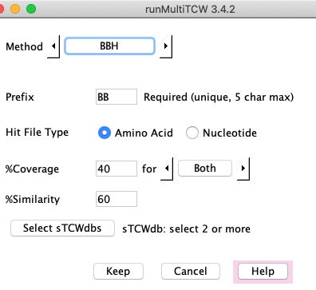
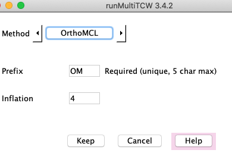

MultiTCW (mTCW) is the comparative module of Transcriptome Computational Workbench.
This module takes as input two or more singleTCW databases (sTCWdb).
It has been tested with input of four sTCWdbs (134k total sequences);
though it can probably handle more input, the viewMultiTCW queries get very slow.
Note, familiarity with singleTCW is essential, as MultiTCW
projects are created by merging existing sTCW projects.
Contents
Common abbreviations:
| mTCWdb | multiTCW database |
| sTCWdb | singleTCW database |
| NT | Nucleotide (transcript, gene) |
| AA | Amino acid (translated ORF, protein) |
| NT-sTCWdb | singleTCW created from NT sequences. |
| AA-sTCWdb | singleTCW created from AA sequences. |
runMultiTCW
- Input:
- Two or more sTCW databases. The
sequences, annoDB hits, GOs, TPM and DE p-values are imported to the mTCWdb.
- For NT-sTCW, both the nucleotide sequences and their translated ORFs will be imported into the mTCWdb.
- The results are the best if:
- The sTCW databases are annotated the same.
- The conditions names are exactly the same (when applicable). For example, if two species both
have counts for the tissue type 'leaf', the condition name provided in runSingleTCW must be the same
for both (e.g. leaf), though the name is case-insensitive.
- The DE column names are exactly the same (when applicable), as in the previous point.
- Computation:
- Compare the AA sequences using diamond or blast,
and the NT sequences with blastn.
- Compute one or more sets of clusters using the following methods:
BBH (bi-directional best hit), Closure, Best hit, orthoMCL1,
and/or user-supplied clusters.
- For a NT-mTCW database created from only NT-sTCW databases,
statistics such as Ka/Ks2, synonymous, etc are computed.
- The clusters are scored.
Software Requirements and Installation
| Go to top |
The multiTCW executables were installed when you installed TCW
(see Installation).
Running the Demo
This section is essential for learning how to use runMultiTCW,
and describes how to make a multiTCW project using the singleTCW demos.
You can use demoTra, demoAsm, demoPro
for a three way comparison that includes an AA-sTCW.
However, the three 'ex' demos, which are included in the package, have more homology so make a better example.
Create the three 'ex' sTCWdbs: Using runSingleTCW, create sTCW_exBar as follows:
- Select "exBar" from the Project dropdown.
- Execute the three steps to load data, instantiate and annotated.
For the annotate step, only the two
invertebrates and fullSubset are selected by default.
- Use runDE to had to add the differential expression p-value for each pair of conditions.
Create sTCW_exFoo and sTCW_exFly as above.
|

|
Create mTCW_ex: A skeleton mTCW_ex project is provided with the release;
to create a project where the results are similar to Overview,
do the following: From the command line, execute ./runMultiTCW, which brings up the interface.
- Click the arrow beside Project to select 'ex'.
- Using the Add button beside the sTCWdb table,
add the exBar, exFoo and exFly databases.
- Select Build Database.
- Select Run Search.
- Select Add Pairs from Hits.
- Using the Add button beside the Cluster Sets table, add the methods as
shown in the image on the right. The orthoMCL.OM-40 file is provided in the
projcmp/ex directory, and will only work if the three 'ex' sTCWdbs have been created.
- Execute Add New Clusters. Upon completion, the methods in the table will be italicized.
- Select Run Stats. When it completes, the label will change to "No action selected".
- Exit runMultiTCW in order to run KaKs_calculator.
- Change directory to: projcmp/ex/KaKs.
- Execute: sh runKaKs
- Start up ./runMultiTCW again. The Statistics label should say
"Read KaKs", if it does not, select Settings and select it.
Then Run Stats.
- Select Launch viewMultiTCW to query the results.
- Add GOs can be run anytime after the Build Database
The overview will look similar to this Overview
(counts may vary slightly).
In this example, the orthoMCL method was run on a machine that had DBD::mysql installed, and the output file
was transferred to a machine without DBD:mysql installed, and added as an "User Defined" method.
|

|
To try mixing NT-sTCWdb and AA-sTCWdb as input, create a mTCWdb with demoTra, demoAsm and demoPro. You can
also experiment with only AA sTCWdbs by first making protein sTCWdbs from the ORF files of
exBar, exFoo and exFly (use the project's orfFiles/bestORFs.pep.fa as input.)
The following continues to use the three "ex" datasets as examples of sTCW databases.
Top three rows

|
Add Project | A popup window will appear where you enter the project name. On 'OK', the
following occurs:
(1) A project directory will be created under projcmp with the project name.
(2) A file called mTCW.cfg is created and written to the project directory.
(3) The database
will be the same name with the prefix 'mTCW_' added.
|
| Help | A pop-up window that provides similar information to this UserGuide.
|
| Project | The drop-down lists all sub-directories under projcmp. When you
select one, the project's mTCW.cfg file will be read and values entered into the interface.
|
| Save | The entered information is saved in mTCW.cfg every time you make
a change. However, you can initiate the save with this button if you want to be sure the
new information is save.
|
| Overview | Once you have selected a project, you can select Overview to see
its status.
|
| mTCW database | By default, the mySQL name will be mTCW_<project-name>. Before
database creation, you can change the name, though it must be prefixed by mTCW_.
|
Remove...: Select one or more options. When you select 'Ok', you will be prompt to verify each removal.
- Clusters from database: Only remove the clusters from the database. The pairs and any
associated annotations will remain.
- Pairs and clusters from database:
Removes the pairs and clusters so you can start over without running Build Database again,
e.g. if you want to use a different hit file, create all new clusters, etc.
Once the pairs are removed,
you can change the settings and then re-add the Pairs.
- mTCW database: Remove the database but leave the project on disk.
- Pairs and method files from disk: If you remove the pairs and clusters from
database, it is a good idea to remove all associated files from disk using this option.
- Hit files from disk: If you recreate the database and there have been changes to the sequences,
you definitely want to remove the hit files so that
it allows you to re-search. Or, if you want to re-run a search program, you need to first remove the hit files using
this option.
- All files from disk: If you no longer are using the project, you can delete
the database (above) and the all relevant files here.
|

|
1. sTCWdb (single TCW databases)
A multiTCW database can be created with a mix of NT-sTCWdbs and AA-sTCWdbs.
|
Click the Add button next to sTCWdbs table.
This brings up the sTCW selection panel shown on the right.
Click Select sTCW Database which produces a panel of existing sTCW databases.
Choose the desired sTCWdb from the list.
The 'prefix' is only used in the Method files, so it does not matter what it is as long as its unique.
The remark can be anything, and can be added/changed after the database is created.
Avoid special characters such as quotes.
When you select Keep, it will take you back to the main panel and
this database will be shown in the sTCWdb table.
Repeat to add all the sTCWdbs you want to compare, then execute Build Database.
|

|
2. Compare sequences
|
The image on the right is the Settings.
The Run Search puts the results in hitsAA.tab and hitsNT.tab;
these names cannot be changed.
On the Settings page, you can change the AA search program from the default Diamond
to Blast. The NT search program is Blastn.
Once the search is run, you can no longer change the parameters; if you want to change the
parameter and re-run the search, remove the hit files using the main panel Remove....
|

|
Add Pairs from Hits
|
| On the main window, loads the pairs from the hits result file.
This step also assigns the shared description, which is the same algorithm as used for
the Majority Hit for clusters. The only difference is that if there is no
shared hit, the hitID will be "*NoShare" whereas clusters always are assigned an annotation.
|
3. Cluster Sets
Methods
Click Add in the Cluster Sets section to add a new clustering method; this brings up the
Method panel. The drop-down beside "Method" shows BBH, Closure, BestHit, OrthoMCL, and User defined.
You can add any number of cluster methods. You can add the same method multiple times with different parameters,
where only the "Prefix" has to be different.
All methods need a unique prefix, which is used to prefix the cluster names, e.g.
a method with prefix "BB8" will have cluster names BB8_00001, BB8_00002, etc. The
prefix can only be 5 characters, so make it a meaningful 5 characters.
BBH
The BBH finds the bi-directional best hit based on hit e-value.
It uses the hits that were loaded
into the database with Add Pairs from Hits. The following explains the parameters:
- Amino acid or nucleotide (for NT-mTCW only).
- %Similarity - the hit similarity (Identity).
- %Coverage - Either or both sequences must have the %coverage. See below for details.
- The Select sTCWdbs will only be present if there are more than two sTCWdbs loaded into the mTCWdb.
The rules are as follows:
- Select two sTCWdbs for the standard BBH of one pair per cluster.
- Select N (N>2) sTCWdbs, and clusters of exactly size N will be created,
where each pair in the cluster is a BBH pair.
|

|
%Coverage:
Closure
Closure has the same %Coverage and %Similarity parameters as the BBH algorithm, and also uses the hits from the database.
It creates clusters as follows:
- All sequences in a cluster must have a hit
with all other sequences in the cluster.
- Each sequence must pass the filters with at least one other sequence in the cluster.
|

|
BestHit
Clusters are formed using the best annotation for each sequences, as follows
(protein hit or pair hit indicates a DIAMOND/BLAST result):
- All sequences share the same best HitID or best Description. If the best description is used:
- If it contains such words as "uncharacterized protein", then the hitID is used.
- Otherwise, the description is used minus the "{ECO:...}" portion of the UniProt descriptions.
- Each sequence must have >=%Similarity and >=%Coverage to the protein hit.
- Each sequence must have >=%Similarity and >=%Coverage to the pair hit with all/any other sequences
in the cluster.
- All: If the All Hit filter is "Yes", then each sequence in a cluster must pass rule #3 with all other sequences in the cluster.
- Any: If the All Hit filter is "No", each sequence only needs to pass rule #3 with one other sequence in cluster.
If the parameters are too lax, this can create some bad clusters. Rule of thumb:
Yes - you can reduce %Similarity and %Coverage.
No - you should increase %Similarity and %Coverage significantly.
The representation hit for the cluster may be different than the hit that
created the clusters, as it includes more rules, such as the #GOs.
|

|
OrthMCL
|
OrthoMCL requires numerous steps to run, and uses a temporary MySQL database;
TCW organizes all these details. DBD::mysql must be installed for the Perl-MySQL interface.
OrthoMCL uses the hit file hitsAA.tab. It does not guarantee that
all sequences in a cluster have a hit with each other.
OrthoMCL occasionally fails -- every time this has happened to me, I rerun and it works.
|

|
User-defined clusters
Create a file specifying the groupings, and the interface simply uploads that file. Hit results
are not used. The group file has the following format:
..
D26: tra|tra_030 tra|tra_184 tra|tra_094 pro|pro_100
D27: tra|tra_045 tra|tra_209 pro|pro_011
...
Each line starts with "DN", where N is the group number, and then has a space-separated list of the
sequences in the group, prefixed by the project prefix that you entered when you set up the mTCW.
The is the same file format used by all methods.
|

|
Majority hit per cluster
For all the cluster methods, a majority hit is assigned to the cluster using the same
rules are for the Pairs Annotation. The only difference is that
the cluster will always be assigned an annotation even if there is only one sequence
with the given annotation. The rules in the context of clusters:
- For a cluster, a list of 'Best Anno' is created where they are
modified as follows:
- The words "probable", "punitive", or "predicted:" are removed.
- The first two words are extracted.
- The annotation is saved in lower case.
- The number of times an abbreviated annotation is found for a sequence in the
cluster is counted (counted only once per sequence no matter how many times it is found in the sequence list).
- The annotation that has the highest count is assigned to the cluster.
If there is a tie, then is further sorts on E-value, whether is it SwissProt and number of GOs.
The cluster is also assigned an associated hitID that has the best E-value.
- A sequence can have a 'Best Anno' of "uncharacterized" if it has no good annotation hits.
This will not be used unless all sequences in the cluster only have "uncharacterized".
- If none of the sequences annotation, the hitID will be "*Novel".
|
For example, in the cluster on the right, all three sequences have the annotation
"chromatin-remodeling complex" in their annotation list. However,
the second sequence does not have the annotation
"ATP-dependent chromotin" in its annotation list.
| 
|
The %Hit is computed, which is the percentage of sequences with the hit. This hit is not necessary
the "Best" hit for any of the sequences.
4. Run Stats
The statistics are broken into four sections:
- Run on the total hit pairs in the database:
- The PCC (Pearson Correlation Coefficient) is only relevant if there are
shared conditions; it is used to determine how similar the TPM values of the
conditions are. It is run on all pairs in the database.
- NOTE: TCW can computed RPKM instead of TPM. The viewSingleTCW
overview, top line, states which was computed.
- Alignment of hit pairs in clusters.
This is "only" relevant for a mTCW database created from at least two NT-sTCWdbs:
- For each alignment, the following is computed:
- Synonymous codons, nonsynonymous codons, %match, #gaps, GC content, etc.
- The summary statistics shown on the Overview for Pairs.
- Outputs the Ka/Ks files for input into KaKs_calculator2.
- Ka/Ks:
- After the Ka/Ks files are written, from the terminal window,
change directories to projcmp/<project>/KaKs
and execute "sh runKaKs". See further details below.
- Execute Run Stats again with Read selected.
- Multiple alignment of clusters.
- Align all clusters using MAFFT3.
- Compute consensus length, standard deviation of length, sum-of-pairs score, and Wentropy score;
see MSA Score for information about using MstatX4.
|

|
After adding clusters and running stats (including adding the KaKs values), you can add more clusters.
In order to update the stats after adding more clusters, select all options except the PCC one, and
Run Stats again.
Details on running KaKs_calculator
After the KaKs files have been created using Run Stats:
Details on MSA score and using MstatX
The default Score1 and Score2 are built-in methods. Score1 is Sum-of-Pairs,
which are normalized between 0-1, where 1 is the best score.
Score2 is "Wentropy", which is copied
directly from the MstatX4 with the exception that the scores are (1-score) so that
1 is the best score.
The MstatX executable is in the /Ext directory and can be used for computing the scores.
From the appropriate /Ext sub-directory, run ./mstatx -h to view the scoring methods available.
The method used by runMultiTCW can be changed from the command line, as follows:
./runMultiTCW -M1 <method> -M2 <method>
where M1 changes Score1 and M2 changes Score2.
For example:
./runMultiTCW -M1 trident
will cause Score1 to be Trident and Score2 will be the default Wentropy computation.
Update scores: The scores can be changed after ALL the MSAs are computed, as follows:
Check Compute MSA and scores and execute
Run Stats. The MSAs from the database will be used for computing the scores, and the database will
be updated with the new scores.
For developers: you can add your own method to the MstatX program and use it in mTCW.
Timings
The following times are from the log files for building an mTCW database with three NT-sTCWdbs.
| Step | Time | Added
|
|---|
| Build Database | 5h:0m:36s | 138,907 sequences
|
| Add Pairs | 2h:3m:04s | 454,568 pairs
|
| Add New Clusters | 1h:23m:05s | 46,831 clusters
|
| Run Stats | 1h:33m:15s | 116,109 alignments
|
The longest task is to Add GOs (timing not shown); this task can be done at anytime,
so it is recommended to wait until everything else is finalized before adding the GOs.
The search program (e.g. blast) is run on #CPU, but all mTCW tasks only use one CPU.
runMultiTCW is not very forgiving if datasets or cluster information are entered wrong.
Its easiest to just to Remove the offending dataset or cluster and re-enter it.
A file called mTCW.error.log is created if there is an error. If its not clear how to
fix the problem, send the file to tcw@agcol.arizona.edu.
The clusters can be viewed by either:
- Click the Launch viewMultiTCW button in the runMultiTCW interface.
- Execute './viewMultiTCW' and a window of existing mTCW databases will be displayed, where
databases can be selected for display.
- Execute './viewMultiTCW <database name>', e.g. './viewMultiTCW demo'
displays the window on the right.
There is Help on all the viewMultiTCW views, and
Tour
shows snapshots of some of the viewMultiTCW windows.
|

|
- Li, L., Stoeckert, C.J., Jr. and Roos, D.S. (2003)
OrthoMCL: identification of ortholog groups for eukaryotic genomes. Genome Res, 13, 2178-2189.
- Zhang Z, Li J, Xiao-Qian Z, Wang J, Wong, G, Yu J (2006) KaKs_Calculator: Calculating Ka and Ks
through model selection and model averaging. Geno. Prot. Bioinfo. Vol 4 No 4. 259-263.
- Katoh K, Standley DM (2013) MAFFT Multiple Sequence Alignment Software Version 7:
Improvements in Performance and Usability. Molecular Biology and Evolution Vol 30, Issue 4 772:780
- Guillaume Collet (2012) https://github.com/gcollet/MstatX.
- Edgar RC (2004) MUSCLE: multiple sequence alignment with high accuracy and high throughput.
Nucleic Acids Res 32: 1792-1797.
{kind=link}
{kind=link}
{kind=link}
{kind=link}
{kind=link}
{kind=link}
{kind=link}